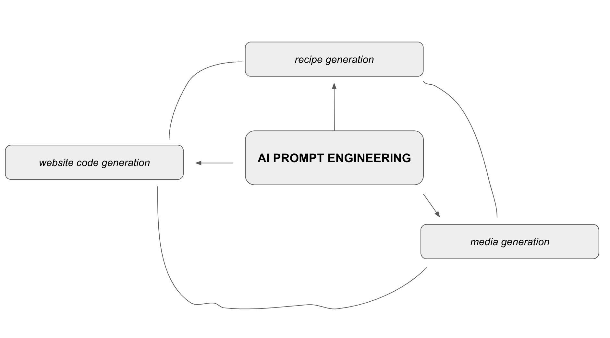

I went to school for physics and attempted a PhD, but I didn't quite resonate with the academic environment. However, I pursued my passion for knowledge and obtained a master's degree in Electrical Engineering. This educational background led me to my current role as a DFM developer at GlobalFoundries. I believe my career is just beginning, and this website serves as a platform to showcase my work and aspirations.
I am an avid and passionate learner, constantly delving into deep subjects. At the moment, my focus is on exploring the works of Heidegger and other influential thinkers in the history of philosophy. In addition to my intellectual pursuits, I enjoy surfing, learning German, and exploring the beautiful state of California.
My professional goal is to engage in a job that allows me to tackle challenging problems while utilizing my creative and analytical abilities. I strongly believe that great ideas stem from interactions and conversations with others. Collaboration, networking, and fostering friendships are essential elements for a fulfilling life. However, I also value the freedom to work flexibly, anywhere and anytime.
Currently, I am enrolled in a coding bootcamp with CodeAcademy, where I am immersing myself in full-stack engineering. This comprehensive training will not only make me more relevant in the job market, but it also sets me apart due to my extensive education in science, mathematics, and the humanities. This diverse knowledge equips me to approach problems from both technical and conceptual standpoints, often starting from first principles.
I am currently working on a YouTube series that delves into the intricacies of Heidegger's "History of the Concept of Time." As an avid reader and enthusiast of Heidegger's philosophy, I have spent several years immersing myself in his profound ideas. There is an undeniable allure to Heidegger's works, as I genuinely believe that he tapped into something truly remarkable and insightful.
However, it is important to acknowledge that engaging with Heidegger's writings is not an easy task. His concepts and language are often complex and demand rigorous attention from readers. Despite the challenges they present, I remain steadfast in my conviction that Heidegger's ideas hold immense value and transformative potential.
One frustration I have encountered is the lackluster quality of many expositors attempting to explain Heidegger's work. While some may genuinely try to convey his ideas accurately, there is a prevalent tendency to oversimplify or misinterpret his profound thoughts. This only further exacerbates the difficulty of comprehending his philosophy and often leads to misconceptions.
In my YouTube series, I aim to bridge this gap by providing a comprehensive and nuanced exploration of Heidegger's "History of the Concept of Time." I aspire to present his ideas in a clear, accessible manner while maintaining the depth and richness of his original work. My goal is to empower viewers with a deeper understanding of Heidegger's philosophy and to inspire them to engage critically with his concepts.
By undertaking this endeavor, I hope to contribute to a more accurate and thoughtful discourse surrounding Heidegger's work. I am confident that with proper guidance and careful analysis, we can unlock the profound insights he offers and appreciate the true depth of his philosophy.
As part of my ongoing exploration, I have been actively experimenting with AI prompt engineering to create marketable content. Prompt engineering involves crafting targeted prompts to generate specific responses from AI language models. By fine-tuning the prompts and leveraging the capabilities of AI, we can create compelling and engaging content across various domains. I am excited about the potential of prompt engineering and its role in shaping the future of content creation.
One of my open projects involves implementing AI-generated content on a cooking website specifically designed for people on a low budget and with a vegetarian inclination. In this project, I use AI to generate recipes and then proceed to test and refine them. Additionally, I incorporate media elements derived from my personal experiences as well as AI-generated media to add a touch of creativity and experimentation. This endeavor allows me to combine my passion for cooking, technology, and innovative approaches to provide accessible and diverse culinary resources. Even the website itself can be AI-generated, so let's view this project as my way of stress testing the capabilities of complete content generation by AI.
I believe this workflow can be generalized to not only cooking elements but many other domains. A constant theme I've come across in my career is that things can be automated.
Surfing is a passion of mine. It challenges me physically and psychologically. It has a deep impact on the quality of my day, week, month and life. It is an amazing sport that I love experimenting with! Every wave is an interpretation is something I once heard said.
david.leocadio94@gmail.com
+1 (856)-789-1313